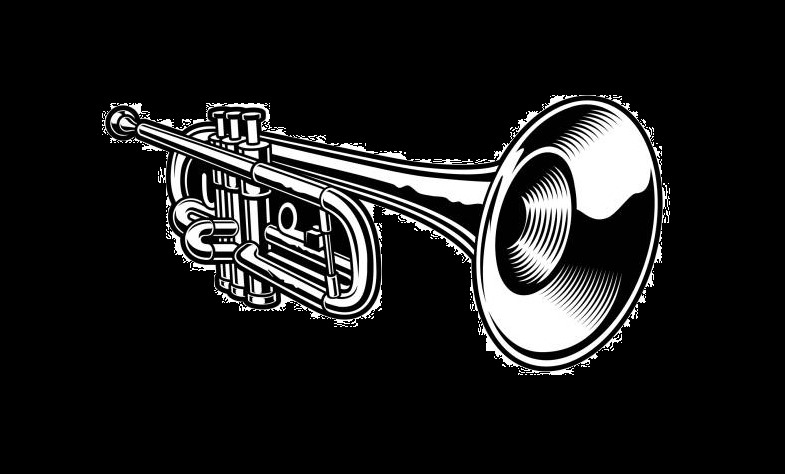

Sklep z instrumentami muzycznymi
Sklepy muzyczne obejmują zarówno sklepy oferujące pełen asortyment , które sprzedają produkty ze wszystkich kategorii instrumentów muzycznych,
a nawet sprzętu audio profesjonalnego (czasami obejmującego sprzęt DJ-ski i elementy scenografii wizualnej, takie jak oświetlenie lub maszyny do produkcji mgły),
jak i sklepy muzyczne skupiające się na podzbiorze tych kategorii (np. sklep sprzedający pianina akustyczne i cyfrowe lub sklep specjalizujący się wyłącznie w perkusji i instrumentach perkusyjnych ),
jak i wysoce wyspecjalizowane sklepy skupiające się na jednym typie produktu (np. butik gitarowy skupiający się na zabytkowych gitarach kolekcjonerskich lub sklep z nutami ).
W Stanach Zjednoczonych i Kanadzie istnieje inne powszechne rozróżnienie między sklepami „Band and Orchestra”, które zaspokajają potrzeby szkolnych programów muzycznych i ich uczniów,
a sklepami „Combo”, które koncentrują się na instrumentach i sprzęcie używanym przez zespół rockowy .
Sklepy muzyczne powstały, aby zaspokoić potrzeby lokalnej społeczności. Obejmowały one nie tylko indywidualnych muzyków amatorów,
 ale także szkoły od poziomu podstawowego do college'u, zespoły i orkiestry obywatelskie, kościoły i zespoły rozrywkowe, które występowały na wydarzeniach społeczności i jej organizacji.
W obsłudze tej zróżnicowanej klienteli właściciele sklepów mogli skupić się na niektórych specjalistycznych lub niszowych rynkach (pianina, nuty, instrumenty perkusyjne).
Instrumenty można było kupić od razu, wydzierżawić lub wynająć. Konkretne lub niedostępne w magazynie przedmioty można było zamówić za pośrednictwem sklepu.
Bardziej powszechnie sklepy muzyczne oferowały pewną różnorodność, w zależności od gustów i zasobów właścicieli oraz pragnień ich klientów (rzeczywistych lub pożądanych).
Mogło to obejmować pewną mieszankę instrumentów progowych (gitary elektryczne, gitary akustyczne, mandoliny, ukulele); instrumentów dętych blaszanych , drewnianych i skrzypcowych ;
bębnów i instrumentów perkusyjnych ; pianin i organów ; artykułów konsumpcyjnych ( struny , stroiki , pałeczki perkusyjne ); akcesoriów ( metronomy , pulpity na nuty); i nut .
W ostatnich dekadach sklepy zaczęły obejmować wzmacniacze instrumentów , jednostki efektów gitarowych , klawiatury elektroniczne , mikrofony , sprzęt do nagrywania dźwięku i cyfrowe oprogramowanie audio.
Nagrane lekcje muzyki stały się niszą, zaczynając od płyt LP i rozwijając się poprzez formaty kaset magnetofonowych , kaset VHS , płyt kompaktowych i DVD .
Oferujemy
Sprzedaż profesjonalnego nagłośnienia
Sprzedaż instrumentów muzycznych
Naprawę instrumentów
Sprzedaż akcesoriów do instrumentów
Konserwację instrumentu
©Zamojski